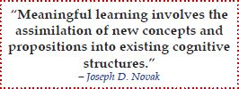

Visual maps have their origin in constructivism, a learning theory that posits that learners actively construct knowledge.

In the 1970s, Joseph D. Novak began to study a concept mapping technique. Concept maps are very similar to visual maps. The major difference is that concept maps label the connection between concepts and visual maps don’t. Novak’s work was based on the theories of David Ausubel,8 who argued that learning takes place by the assimilation of new concepts into the existing concept framework held by the learner. In his work, Ausubel made a very important distinction between rote learning (learning that avoids understanding of a subject and instead focuses on memorization) and meaningful learning.